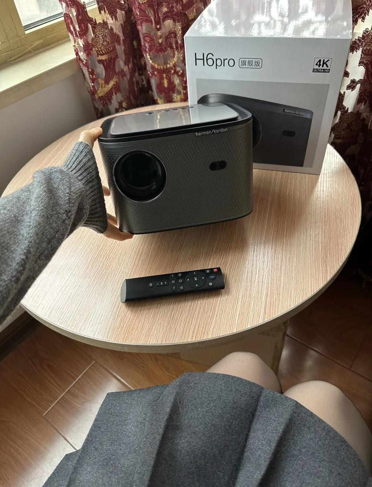

极米 H6 4K

极米家用旗舰投影，4K 分辨率配光学变焦镜头，画面调整灵活不损失画质，哈曼卡顿音响与成熟系统兼顾观影与易用，是客厅大屏方案的稳妥之选，适合追求省心、不爱折腾的大屏玩家。
客观评测
极米 H6 4K 采用 LED 光源与 4K 显示芯片，标称亮度约 1500 CVIA 流明，配备约 1.2 倍光学变焦镜头。实测在遮光环境下画面色彩饱满、肤色自然，自动对焦与六向梯形校正反应迅速，开机后数秒即可获得方正画面。哈曼卡顿双单元音响的低频与人声表现优于多数投影内置音响。白天强光环境下亮度仍偏保守，是其主要限制。
主观点评
它把「摆投影」这件事变简单了：搬到茶几上、挪到床头柜，镜头一缩放画面就合适，不用垫书找角度。晚上关灯投一百来寸，电影感一下子就出来了，音响也够看片不用外接。它不是亮度怪兽，但对大多数晚上观影的家庭来说，这份省心与均衡正是最讨喜的地方。预算不高又想上大屏，它值得进候选名单。
优点与不足
- 光学变焦投距灵活，搬家换房不挑位置
- 自动对焦与校正好用，开机即方正画面
- 哈曼卡顿音响素质不错，可少买一套音箱
- LED 光源亮度在白天强光下仍需遮光
- 4K 在大画幅下锐度不及激光机型
- 风扇噪音在安静环境下可感知
参数规格
| 光源 | LED 光源，标称寿命约 25000 小时 |
|---|---|
| 亮度 | 约 1500 CVIA 流明（厂商标称） |
| 分辨率 | 3840×2160（4K） |
| 变焦 | 光学变焦约 1.2 倍，无损缩放画面 |
| 芯片 | 联发科 MT9669 四核，4GB + 64GB 存储 |
| 系统 | INUI（GMUI）系统，内置主流视频平台 |
| 音响 | 哈曼卡顿双单元音响 |
| 校正 | 自动对焦、自动梯形校正、画面自动避障 |
| 接口 | HDMI ×2、USB ×2、光纤音频输出 |
| 功耗 | 约 150W（视亮度模式） |